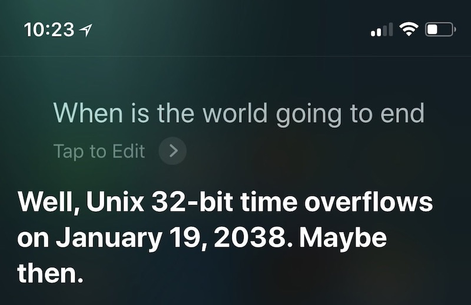

两个很基本 (但也很困难) 的问题
printf("%p\n", main);
char *p = random();
*p; // 什么时候访问合法？
这种小问题问 GPT 就好了
pmap (1) - report memory of a process
/proc/) 实现的查看进程的地址空间
RTFM: /proc/[pid]/maps (man 5 proc)
-l) 里的信息互相验证#define MB * 1048576
char mem[64 MB];
0000555555554000 r--p a.out
0000555555555000 r-xp a.out
0000555555556000 r--p a.out
0000555555557000 r--p a.out
0000555555558000 rw-p a.out
00007ffff7dc1000 r--p libc-2.31.so
00007ffff7de3000 r-xp libc-2.31.so
00007ffff7f5b000 r--p libc-2.31.so
00007ffff7fa9000 r--p libc-2.31.so
00007ffff7fad000 rw-p libc-2.31.so
00007ffff7faf000 rw-p (这是什么？)
00007ffff7fcb000 r--p [vvar] (这又是什么？)
00007ffff7fce000 r-xp [vdso] (这叒是什么？)
00007ffff7fcf000 r--p (省略相似的 ld-2.31.so)
00007ffffffde000 rw-p [stack]
ffffffffff600000 --xp [vsyscall] (这叕是什么？)
vdso (7): Virtual system calls: 只读的系统调用也许可以不陷入内核执行。

无需陷入内核的系统调用